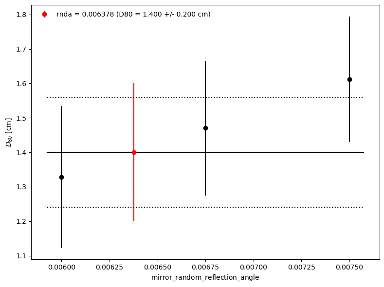
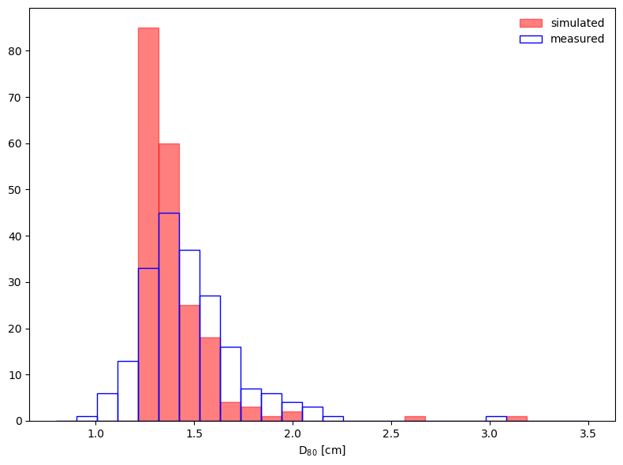

simtools-derive-mirror-rnda#
Derive mirror random reflection angle (mirror roughness) of a single mirror panel.
Description#
This application derives the value of the simulation model parameter mirror_reflection_random_angle using measurements of the focal length and point-spread function (PSF) of individual mirror panels. This parameter is sometimes referred to as the “mirror roughness”.
PSF measurements are provided by one of the following options:
mean and sigma value obtained from the measurement of containment diameters of a number of mirror panels in cm (
--psf_measurement_containment_meanand--psf_measurement_containment_sigma)file (table) with measured PSF for each mirror panel spot size (
--psf_measurement)
The containment fraction used for the PSF diameter calculation is set through
the argument --containment_fraction (typically 0.8 = 80%; called below D80).
Mirror panels are simulated individually, using one of the following options to set the mirror panel focal length:
file (table) with measured focal lengths per mirror panel (provided through
--mirror_list)randomly generated focal lengths using an expected spread (value given through
--random_focal_length) around the mean focal length (provided through the Model Parameters DB). This option is switched with--use_random_focal_length.
The tuning algorithm requires a starting value for the random reflection angle. This is either
taken from the Model Parameters DB (default) or can be set using the argument --rnda.
Ray-tracing simulations are performed for single mirror configurations for each mirror given in the mirror list. The mean simulated containment diameter for all the mirrors is compared with the mean measured containment diameter. The algorithm defines a new value for the random reflection angle based on the sign of the difference between measured and simulated containment diameters and a new set of simulations is performed. This process is repeated until the sign of the difference changes, meaning that the two final values of the random reflection angle brackets the optimal. These two values are used to find the optimal one by a linear interpolation. Finally, simulations are performed by using the interpolated value, which is defined as the desired optimal.
The option --no_tuning can be used if one only wants to simulate one value for the random
reflection angle and compare the results with the measured ones.
Results of the tuning are plotted. See examples of the PSF containment diameter D80 vs random reflection angle plot, on the left, and the D80 distributions (per mirror panel), on the right.
 {kind=link}
{kind=link}
This application uses the following software tools:
sim_telarray/bin/sim_telarray
sim_telarray/bin/rx (optional)
Command line arguments#
- telescope (str, required)
Telescope name (e.g. LSTN-01, SSTS-25)
- model_version (str, optional)
Model version
- psf_measurement (str, optional)
Table with results from PSF measurements for each mirror panel spot size
- psf_measurement_containment_mean (float, required)
Mean of measured containment diameter [cm]
- psf_measurement_containment_sigma (float, optional)
Std dev of measured containment diameter [cm]
- containment_fraction (float, required)
Containment fraction for diameter calculation
- rnda (float, optional)
Starting value of mirror_reflection_random_angle [deg]. If not given, the value from the default model is read from the simulation model database.
- mirror_list (file, optional)
Table with mirror ID and panel radius.
- use_random_focal_length (activation mode, optional)
Use random focal lengths, instead of the measured ones. The argument random_focal_length can be used to replace the default random_focal_length from the model.
- random_focal_length (float, optional)
Value of the random focal lengths to replace the default random_focal_length. Only used if ‘use_random_focal_length’ is activated.
- random_focal_length_seed (int, optional)
Seed for the random number generator used for focal length variation.
- no_tuning (activation mode, optional)
Turn off the tuning - A single case will be simulated and plotted.
- test (activation mode, optional)
If activated, application will be faster by simulating only few mirrors.
Example#
Derive mirror random reflection angle for a large-sized telescope (LSTS), simulation production 6.0.0
simtools-derive-mirror-rnda \\
--site South \\
--telescope LSTS-design \\
--model_version 6.0.0 \\
--containment_fraction 0.8 \\
--mirror_list ./tests/resources/mirror_list_CTA-N-LST1_v2019-03-31_rotated.ecsv
--rnda 0.003 \\
--psf_measurement_containment_mean 1.4 \\
Expected final print-out message:
Measured D80:
Mean = 1.400 cm
Simulated D80:
Mean = 1.406 cm, StdDev = 0.005 cm
mirror_random_reflection_angle
Previous value = 0.003000
New value = 0.003824